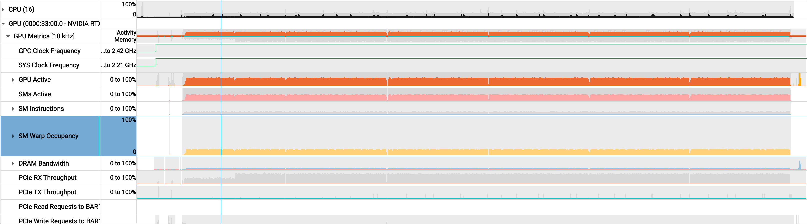
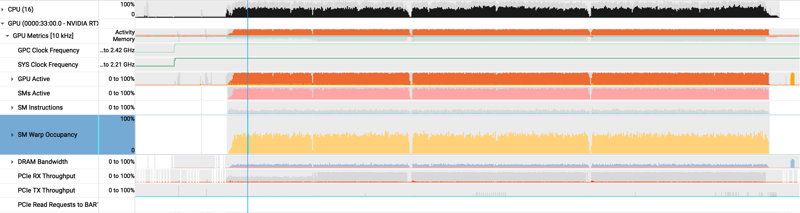

september 18, 2026
a tale of two runtimes
improving GPU utilization with Tokio and cuDF
There has been growing interest in GPU query engines over the last two years, notably with the Theseus paper, NVIDIA's acquisition of HEAVY.AI, and NVIDIA's blog post on GQE. That makes sense: analytical queries over massive datasets can benefit from GPU acceleration and make effective use of smaller GPUs not typically used for frontier models.
Recently, I spent a week working on libcudf-rs, an experimental OLAP engine built on Apache DataFusion and Rust bindings for cuDF (huge shoutout to my colleague and original author @gabotechs who recently gave a talk about it). A major goal of the project is to see whether a GPU instance can offer better performance per dollar than a CPU-only instance on OLAP workloads.
My goal was to finalize our execution model, keeping in mind two goals:
- keep resources (i.e., the GPU) saturated when compute or memory capacity is available; and
- schedule work efficiently across the Tokio and CUDA/cuDF runtimes while reconciling them with DataFusion's Volcano-based execution model.
problem: the GPU wasn't saturated
With one CUDA stream and one DataFusion partition (analogous to a Tokio task), the current execution model had only one host thread feeding the GPU. As a result, the GPU could execute only one kernel or host-to-device copy at a time (with the sole exception of the cuDF read_parquet kernel, which uses streams internally).
The reason we had this simple model was that it was easier to reason about correctness and lifetimes. The safeguards that Rust has around shared ownership and lifetimes don't really apply to data on the GPU. For example, the borrow checker and type system cannot detect potential cross-stream dependencies or ensure that a necessary stream sync happens before reading data on the GPU.
However, as the project matured, we started looking for the next performance gain, namely in the form of concurrency and parallelism. We wanted to:
- efficiently schedule cuDF/GPU operations from the host runtime; and
- concurrently run operations on the GPU when it has available resources.
Doing so requires migrating to a multi-task, multi-CUDA-stream model, which I'll dive into below.
first: stop blocking host threads
Every DataFusion operator produces a futures::Stream that polls its input, performs the operation, and yields a RecordBatch. For example, a DataFusion AggregateExec implements something like this:
fn poll_next(mut self: Pin<&mut Self>, cx: &mut Context<'_>) -> Poll<Option<Result<Batch>>> {
let batch = ready!(self.input.poll_next_unpin(cx));
let output = aggregate_on_cpu(batch)?;
Poll::Ready(Some(Ok(output)))
}For our GPU operators, we implemented a simple translation of the above. A CuDFAggregateExec is almost the same:
fn poll_next(mut self: Pin<&mut Self>, cx: &mut Context<'_>) -> Poll<Option<Result<Batch>>> {
let batch = ready!(self.input.poll_next_unpin(cx));
let output = aggregate_on_gpu(batch)?; // new: launches a kernel
Poll::Ready(Some(Ok(output)))
}The problem is that aggregate_on_gpu calls into cuDF through FFI. cuDF enqueues kernels asynchronously, but its APIs are synchronous from the caller's perspective and may sync streams internally for correctness. This means poll_next cannot yield while executing cuDF code, resulting in long polls that block the calling Tokio executor thread.
I inspected a query using the Tokio Console and saw the issue firsthand. In TPC-H Q1, the root task executing the query was marked busy for 9 of 10 seconds, with an average poll around 27 ms.
state total busy sched idle polls avg poll
before ▶ 10s 9s 628ms 36µs 335 ~27msIn aggregate, the task spent 9 seconds being polled. During each poll, the executor could not schedule another future on that worker thread until poll_next returned.
In PR #89, I implemented a simple fix. Because cuDF calls can block their calling thread, I moved the GPU aggregate kernel work to Tokio's blocking pool. spawn_blocking returns a future, allowing poll_next to return Pending while the work continues on another thread.
match &mut self.state {
State::ReadingInput => {
// Move the blocking GPU call to another thread.
self.state = State::Aggregating(
tokio::task::spawn_blocking(move || aggregate_on_gpu(batch)),
);
continue;
}
// Later calls poll the GPU task's JoinHandle.
State::Aggregating(task) => match Pin::new(task).poll(cx) {
Poll::Pending => Poll::Pending,
Poll::Ready(result) => finish(result),
},
}spawn_blocking isolates the synchronous cuDF call. Polling its
JoinHandle lets the DataFusion stream yield until the result is ready.
In the Tokio Console, our poll duration improved to 1 ms and the task was busy for far less time.
state total busy sched idle polls avg poll
after ⏸ 17s 2s 15s 3ms 1993 ~1mssecond: add tasks and CUDA streams
In CPU land, DataFusion parallelizes a plan in two directions. Vertical parallelism splits the plan into pipelines at operators such as RepartitionExec. When first polled, RepartitionExec spawns producer tasks to drive the pipeline below it, allowing the pipelines above and below the boundary to run concurrently. Horizontal parallelism runs multiple partitions of each pipeline, with each partition processing a different slice of the input.
For example, this plan:
SortExec
AggregateExec
RepartitionExec
ProjectionExec
FilterExec
DataSourceExeccan run as four concurrent tasks: two pipelines/segments, s0 and s1, each with two partitions, p0 and p1.
s0,p0: SortExec <- AggregateExec <- RepartitionExec
s0,p1: SortExec <- AggregateExec <- RepartitionExec
s1,p0: ProjectionExec <- FilterExec <- DataSourceExec
s1,p1: ProjectionExec <- FilterExec <- DataSourceExecPR #92 applies a similar idea to GPU aggregates. It adds an optimizer rule that recognizes an aggregate over a Parquet scan with pipelineable operators in between (note that aggregates are pipeline breakers because they must consume their entire input before emitting a batch). The rule splits these pipelines into parallel partitions and assigns a non-blocking CUDA stream to each.
before
Aggregate · single [1]
Projection [1]
Filter [1]
Coalesce [8 → 1] // everything above this runs in one stream
Parquet scan [8]after
Aggregate · final [1]
Coalesce [8 → 1] // everything below is parallelized on 8 streams
Aggregate · partial [8] // per-partition aggregation to reduce the data size
Projection [8]
Filter [8]
Parquet scan [8]The GPU-backed record batches reference the stream they are on, so filters, projections, and partial aggregates enqueue kernels on the same stream, avoiding any cross-stream dependencies. Only the final aggregate synchronizes all the streams and merges their partial results. The final aggregate would have had to wait for its entire input anyway because it's a natural pipeline breaker.
results
TPC-H SF100 on a g7.4xlarge with an NVIDIA RTX PRO 4500 Blackwell Server Edition (32 GB, 165 W). These are mean end-to-end query times from the PR. They compare the original plan with the complete multi-partition, multi-stream rewrite.
- 2.53× — Q15 speedup at 8 streams
- 2.07× — Q1 speedup at 8 streams
- 1.77× — Q20 speedup at 2 streams
| query | 1 stream | 2 streams | 4 streams | 8 streams | best speedup |
|---|---|---|---|---|---|
| Q1 | 4908 ms | 3526 ms | 2508 ms | 2374 ms | 2.07× |
| Q15 | 3182 ms | 1787 ms | 1295 ms | 1256 ms | 2.53× |
| Q17 | 7308 ms | 6300 ms | 6557 ms | 6898 ms | 1.16× |
| Q18 | 32915 ms | 27895 ms | 24891 ms | 23531 ms | 1.40× |
| Q20 | 6002 ms | 3383 ms | 3402 ms | 3606 ms | 1.77× |
the profile tells the same story
An NVIDIA Nsight Systems profile of Q1 tells the same story. Extra streams turn empty GPU capacity into useful overlap: the runtime drops by half while all three utilization measures rise sharply.
- 8% → 47% — SM warp occupancy
- 20% → 85% — SM activity
- 37% → 95% — GPU activity
before · one stream

after · eight streams
